経営者の、その先を設計する。
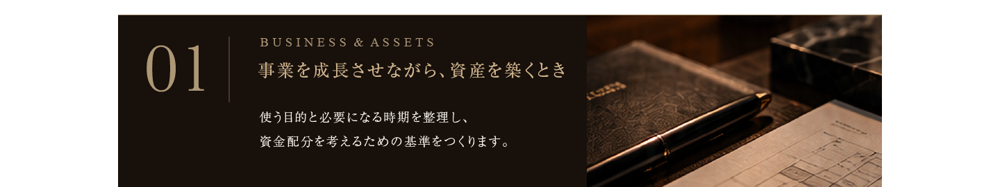
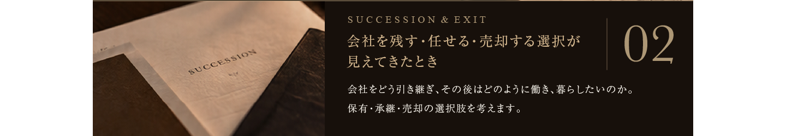
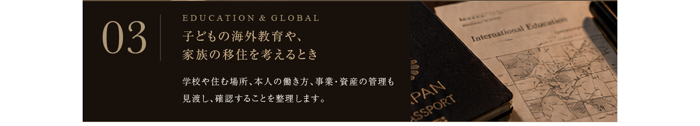
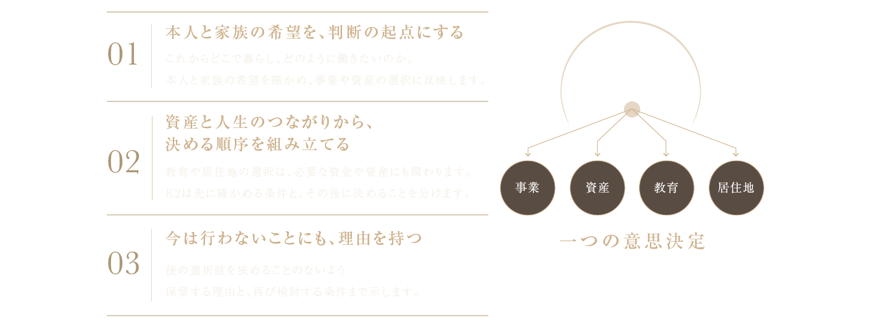
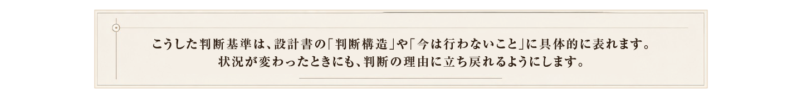
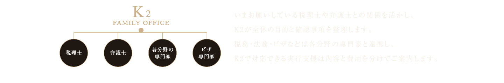
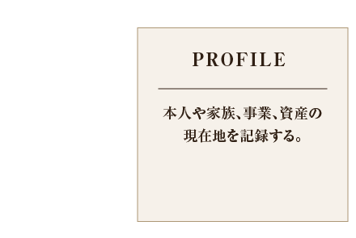
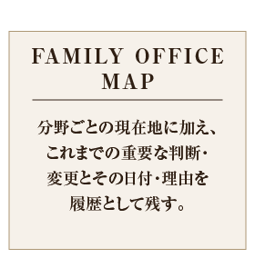
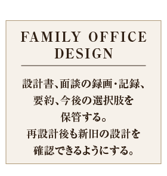
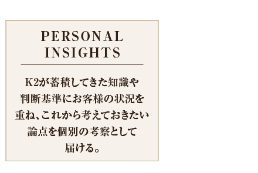
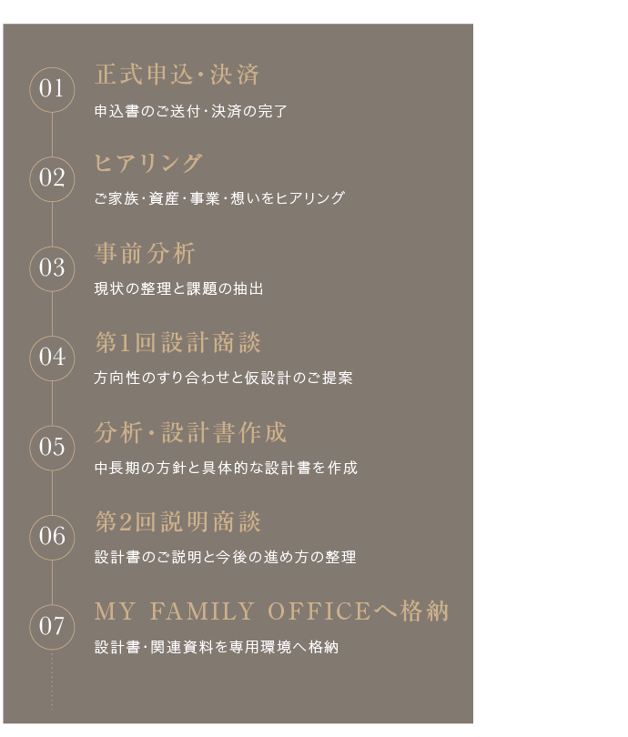
まだ資産形成の途中でも相談できますか？
はい。事業や資産を育てている途中の方も対象です。資産額に加え、いま抱えている意思決定の内容を踏まえて確認します。
今の税理士や弁護士と併用できますか？
はい。既存の専門家との関係を活かし、K2が整理した全体の方針と確認事項をもとに進めます。
家族も面談に参加できますか？
第1回の設計面談には配偶者・パートナー、ご家族も参加でき、人数による追加料金はありません。本人と家族を一つの単位として設計します。独立した複数世帯の個別設計は別途ご案内します。
金融商品の提案や契約も行いますか？
金融商品の販売を目的とするサービスではありません。必要と判断した場合にご案内することはありますが、具体的な取引は設計と区分し、別途説明・手続きを行います。
設計書やMAPについて、後から質問できますか？
はい。納品後はMY FAMILY OFFICE内のASKから、既存の設計書やMAPについてご質問いただけます。K2が内容を確認して回答し、質問と回答はご本人専用の画面に残ります。無制限の個別相談ではなく、設計を理解し、判断に活かすための窓口です。詳しい対応条件は正式申込み前にご案内します。
状況が変わった場合も、ASKだけで相談できますか？
既存設計の説明や確認はASKで承ります。会社売却などにより設計の前提が大きく変わった場合は、必要に応じて再設計55万円（税込）をご案内します。新たな全体設計は、ASKの回答とは分けて行います。
どのような資料を準備すればよいですか？
まずは事前アンケートで概要を伺い、決済後に必要な情報を確認します。金額は基本的に概算で構いません。最初から大量の資料をご用意いただく必要はありません。
落ち着いてお話を伺うため、事前予約のない電話相談はお受けしていません。ご相談内容を確認し、K2側でも準備を整えたうえで面談します。
落ち着いてお話を伺うため、事前予約のない電話相談はお受けしていません。ご相談内容を確認し、K2側でも準備を整えたうえで面談します。
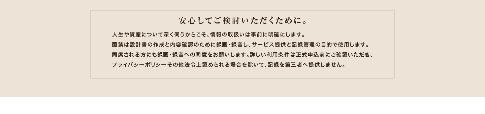